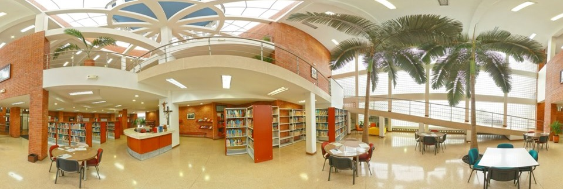

<mat-drawer-container class="container" autosize hasBackdrop="true">
  <mat-drawer #drawer class="sidenav" mode="over">
    
    <hr>
    <div class="container-links">
      <mat-icon aria-hidden="false" aria-label="backup" fontIcon="backup"></mat-icon>
      <a routerLink="/uploadFile" class="btn" role="button" data-bs-toggle="button" aria-pressed="true">Subir Archivo</a>
    </div>
    <div class="container-links">
      <mat-icon aria-hidden="false" aria-label="list" fontIcon="list"></mat-icon>
      <a routerLink="/projects" class="btn" role="button" data-bs-toggle="button" aria-pressed="true">Ver Archivos</a>
    </div>
    <div class="container-links">
      <mat-icon aria-hidden="false" aria-label="logout" fontIcon="logout"></mat-icon>
      <a routerLink="/login" class="btn" role="button" data-bs-toggle="button" aria-pressed="true">Cerrar Sesión</a>
    </div>
  </mat-drawer>

  <div class="sidenav-content">
    <button type="button" mat-button (click)="drawer.toggle()">
      <mat-icon aria-hidden="false" aria-label="menu" fontIcon="menu"></mat-icon>
    </button>
    <div class="imagen-texto">
      
      <h1 class="texto">
        Bienvenido a CircuitProjects
      </h1>
    </div>
    <div class="col-8 textoDash">En CircuitProjects podrás subir el documento relacionado a tu proyecto creado para circuitos y señales</div>
  </div>
</mat-drawer-container>